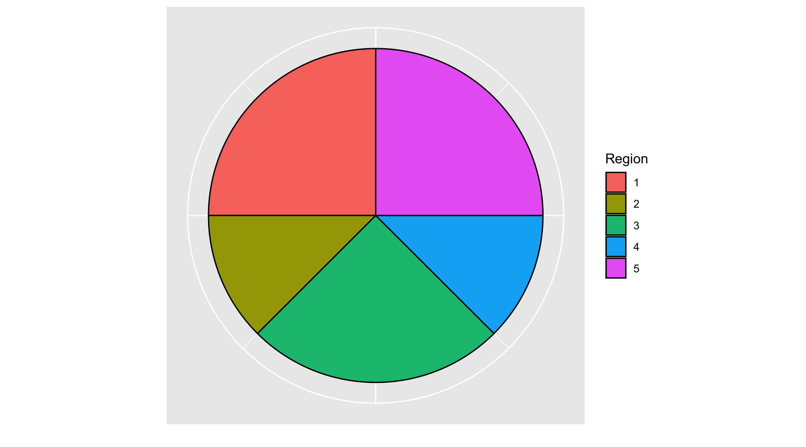
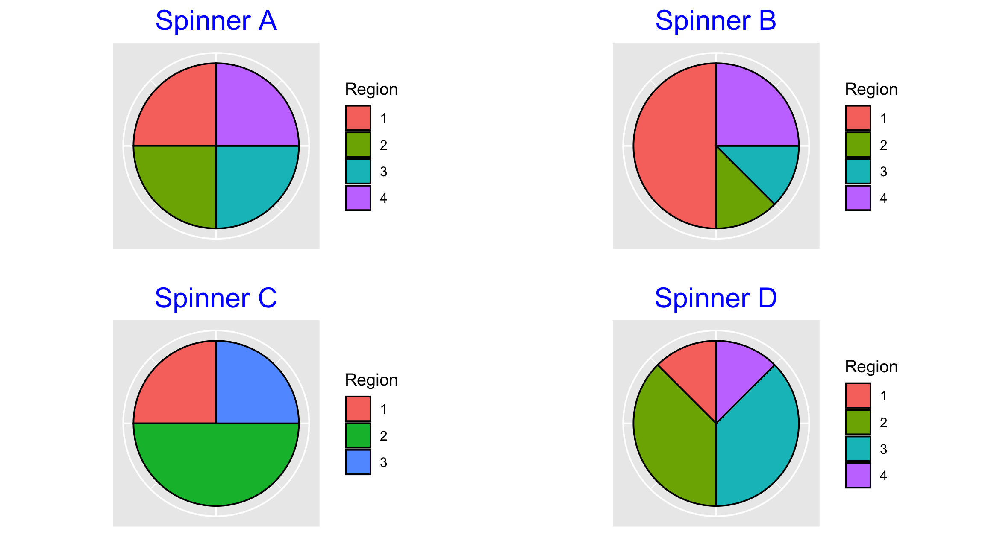
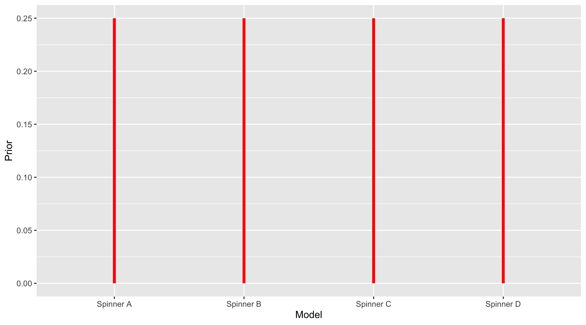
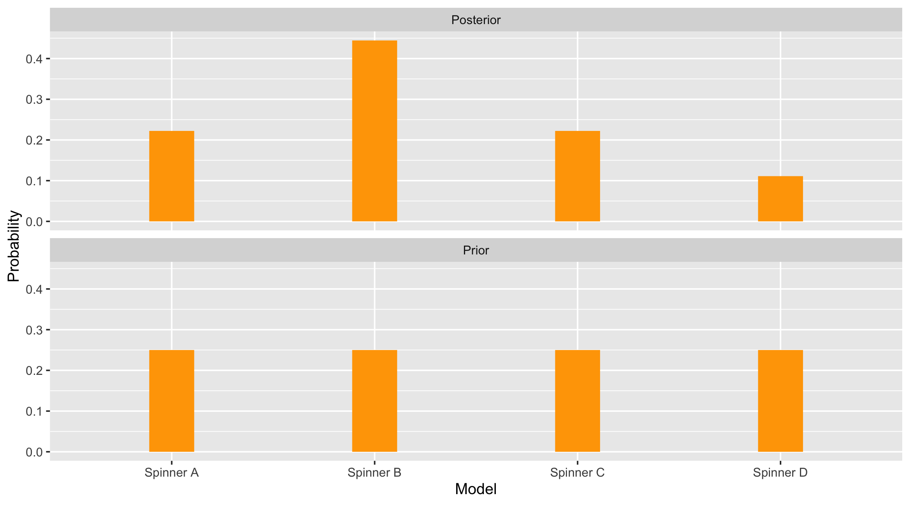

1 Introduction
1.1 The Traditional Introduction to Statistics
A traditional introduction to statistical thinking is based on the notion of sampling distributions. This approach leads into statistical inference topics including point estimates and hypothesis testing, regression models, design of experiments and ANOVA models.
Although this traditional course remains popular, there seems to be little discussion in this course on the application of the inferential material in modern statistical practice. Although there are benefits in discussing methods of estimation such as maximum likelihood, and optimal inference such as a best hypothesis test, the students learn little about statistical computation and simulation-based inferential methods. As stated in Cobb (2015), there appears to be a disconnect between the statistical content we teach and statistical practice.
1.2 Learning Using Bayes’ Rule
An alternative way of performing statistical inference is through the Bayesian viewpoint. Probabilities on unknown quantities are conditional in that one’s opinion about an event is dependent on our current state of knowledge. As we gain new information, our probabilities can change. Bayes’ rule provides a mechanism for changing our probabilities when we obtain new data.
The ProbBayes package is designed to illustrate Bayesian thinking. This package is used here to learn about the identity of an unknown spinner. It is supposed that each spinner is divided in several regions and the outcomes of the spins are the integers 1, 2, … and so on.
A spinner is constructed by specifying a vector of areas of the spinner regions. For example one spinner is defined with five outcomes with corresponding areas 2, 1, 2, 1, 2. The spinner_plot() function will produce the spinner as displayed in Figure 1.1.
We figure out the probability distribution for the spins from knowing the areas of the five outcomes. Each region area is divided by the sum of the areas, obtaining the probabilities as displayed using the function spinner_probs(). This data frame of probabilities is stored in the R object p_dist.
Code
(p_dist <- spinner_probs(areas)) Region Prob
1 1 0.250
2 2 0.125
3 3 0.250
4 4 0.125
5 5 0.250To illustrate Bayes’ rule, suppose there are four spinners, \(A, B, C, D\) defined by the vectors s_reg_A, s_reg_B, s_reg_C, and s_reg_D pictured in Figure 1.2.

A box contains four spinners, one of each type. A friend selects one and holds it behind a curtain. Which spinner is she holding?
The identity of her spinner is called a model. There are four possible models, the friend could be holding Spinner A, or Spinner B, or Spinner C, or Spinner D. In R, a data frame is created with a single variable Model and the names of these spinners are placed in that column.
Code
(bayes_table <- data.frame(Model=c("Spinner A",
"Spinner B", "Spinner C", "Spinner D"))) Model
1 Spinner A
2 Spinner B
3 Spinner C
4 Spinner DWe do not know what spinner this person is holding. But we can assign probabilities to each model that reflect her opinion about the likelihood of these four spinners. There is no reason to think that any of the spinners are more or less likely to be chosen so the same probability of 1/4 is assigned to each model. These probabilities are called the person’s prior since they reflect her beliefs before or prior to observing any data. It is called a Uniform prior since the probabilities are spread Uniformly over the four models. In the data frame, a new column Prior is added with the values 1/4, 1/4, 1/4, 1/4.
Code
bayes_table$Prior <- rep(1/4, 4)
bayes_table Model Prior
1 Spinner A 0.25
2 Spinner B 0.25
3 Spinner C 0.25
4 Spinner D 0.25The prob_plot() function graphs the prior distribution (see Figure 1.3).

Next, our friend will spin the unknown spinner once – it turns out to land in Region 1.
The next step is to compute the likelihoods – these are the probabilities of observing a spin in Region 1 for each of the four spinners. In other words, the likelihood is the conditional probability \[
Prob({ Region 1} \mid { Model}),
\] where model is one of the four spinners.
We figure out these likelihoods by looking at the spinners. For example, look at Spinner \(A\). Region 1 is one quarter of the total area for Spinner \(A\), so the likelihood for Spinner \(A\) is one fourth, or \[
Prob({ Region 1} \mid { Spinner} \, \, A) = 1 / 4.
\] Looking at Spinner \(B\), Region 1 is one half of the total area so its likelihood is one half. In a similar fashion, We determine the likelihood for Spinner \(C\) is one fourth and the likelihood for Spinner \(D\) is one eighth. These likelihoods are added to our bayes_table.
Code
bayes_table$Likelihood <- c(1/4, 1/2, 1/4, 1/8)
bayes_table Model Prior Likelihood
1 Spinner A 0.25 0.250
2 Spinner B 0.25 0.500
3 Spinner C 0.25 0.250
4 Spinner D 0.25 0.125Once the prior probabilities and the likelihoods are found, it is straightforward to compute the posterior probabilities. Bayes’ rule says that the posterior probability of a model is proportional to the product of the prior probability and the likelihood. Formally,
\[ Prob({ model} \mid { data}) = \frac{Prob({ model}) \times Prob({ data} \mid { model})}{\Sigma_{all \, models} Prob({ model}) \times Prob({ data} \mid { model})}. \] Bayesian use the phrase “turn the Bayesian crank” to reflect the straightforward way of computing posterior probabilities using Bayes’ rule.
An R function bayesian_crank() takes as input a data frame with variables Prior and Likelihood and outputs a data frame with new columns Product and Posterior. This function is applied for our example where we observe “Region 1” outcome.
Code
(bayesian_crank(bayes_table) -> bayes_table) Model Prior Likelihood Product Posterior
1 Spinner A 0.25 0.250 0.06250 0.2222222
2 Spinner B 0.25 0.500 0.12500 0.4444444
3 Spinner C 0.25 0.250 0.06250 0.2222222
4 Spinner D 0.25 0.125 0.03125 0.1111111For each possible model, the prior probability is multiplied by its likelihood. After finding the four products, these are changed to probabilities by dividing each product by the sum of the products. These are called posterior probabilities since they reflect our new opinion about the identity of the spinner posterior or after observing the spin in Region 1.
By using the prior_post_plot() function, the prior and posterior distributions are graphically compared for our spinners, in Figure 1.4.
Code
prior_post_plot(bayes_table)
These calculations can be viewed from a learning perspective. Initially, there was no reason to favor any spinner and each of the four spinners was given the same prior probability of 0.25. Now after observing one spin in Region 1, the person’s opinions have changed. Now the most likely spinner behind the curtain is Spinner B since it has a posterior probability of 0.44. In contrast, it is unlikely that Spinner D has been spun since its new probability is only 0.11.
1.3 Why Bayes?
There are good reasons for introducing the Bayesian perspective at the calculus-based undergraduate level. First, many people believe that the Bayesian approach provides a more intuitive and straightforward introduction than the frequentist approach to statistical inference. Given that the students are learning probability, Bayes provides a useful way of using probability to update beliefs from data. Second, given the large growth of Bayesian applied work in recent years, it is desirable to introduce the undergraduate students to some modern Bayesian applications of statistical methodology. The timing of a Bayesian course is right given the readily availability of Bayesian instructional material and an increasing amount of Bayesian computational resources.
We propose that Cobb’s five imperatives can be implemented through a Bayesian statistics course. Simulation provides an attractive “flattened prerequisites” strategy in performing inference. In a Bayesian inferential calculation, we avoid the integration issue by simulating a large number of values from the posterior distribution and summarizing this simulated sample. %Moreover, this Bayesian course can introduce the family of Markov chain Monte Carlo (MCMC) simulation algorithms used by Bayesian scientists that are applicable a wide variety of inferential problems, further “embrace computation”. Moreover, by teaching fundamentals of Bayesian inference of conjugate models together with simulation-based inference, students gain a deeper understanding of Bayesian thinking. Familiarity with simulation methods in the conjugate case prepares students for the use of simulation algorithms later for more advanced Bayesian models.
One advantage of a Bayes perspective is the opportunity to input expert opinion by the prior distribution which allows students to “exploit context” beyond a traditional statistical analysis.
It is desirable to introduce some strategies for constructing a prior when substantive prior information is available. In the case where little prior knowledge is available, some discussion about suitable weakly informative priors is needed. This text introduces strategies for constructing priors in the situations when both substantial prior information and little prior knowledge are available.
To further “exploit context”, one particular Bayesian success story is introduced: the use of hierarchical modeling when simultaneously estimating parameters from several groups. In many applied statistical analyses, a common problem is to combine estimates from several groups, often with certain groups having a limited amount of available data. Through interesting applications, we introduce hierarchical modeling as an effective way to achieve partial pooling of the separate estimates.
The value of these hierarchical models can be demonstrated by use of simple examples such as the simultaneous estimation of several proportions.
Thanks to a number of general-purpose software programs available for Bayesian MCMC computation (e.g. openBUGS, JAGS, Nimble, and Stan), students are able to learn and apply more advanced Bayesian models for complex problems. We believe it is important to introduce the students to at least one of these programs which “flattens the prerequisite” of computational experience and “embraces computation”. The main task in the use of these programs is the specification of a script defining the Bayesian model, and the Bayesian fitting is implemented by a single function that inputs the model description, the data and prior parameters, and any tuning parameters of the algorithm.
There are several benefits to using general-purpose software. First, by writing the script defining the full Bayesian model, the students get a deeper understanding of the sampling and prior components of the model. Second, by use of this software for sophisticated models such as hierarchical models, this software lowers the bar for students to implement these methods. The focus of the students’ work is not the computation but rather the summarization and interpretation of the MCMC output.
By writing the script defining the full Bayesian model, we believe the students get a deeper understanding of the sampling and prior components of the model. Moreover, by use of this software for sophisticated models such as hierarchical models, it lowers the bar for students implementing these methods. The focus of the students’ work is not the computation but rather the summarization and interpretation of the MCMC output. Students interested in the nuts and bolts of the MCMC algorithms can further their learning through directed research or independent study.
Last, we believe all aspects of a Bayesian analysis are communicated best through interesting case studies. In a good case study, both the background of the study and the inferential or predictive problems of interest are described. In a Bayesian applied analysis in particular, we describe the process of constructing a prior to represent expert opinion, developing the likelihood, and using the posterior distribution to address the questions of interest. We therefore propose the inclusion of fully-developed case studies in a Bayesian course for students’ learning and practice. Based on our teaching experience, having students work on a course project is the best way for them to learn, resonating with Cobb’s “teach through research”.